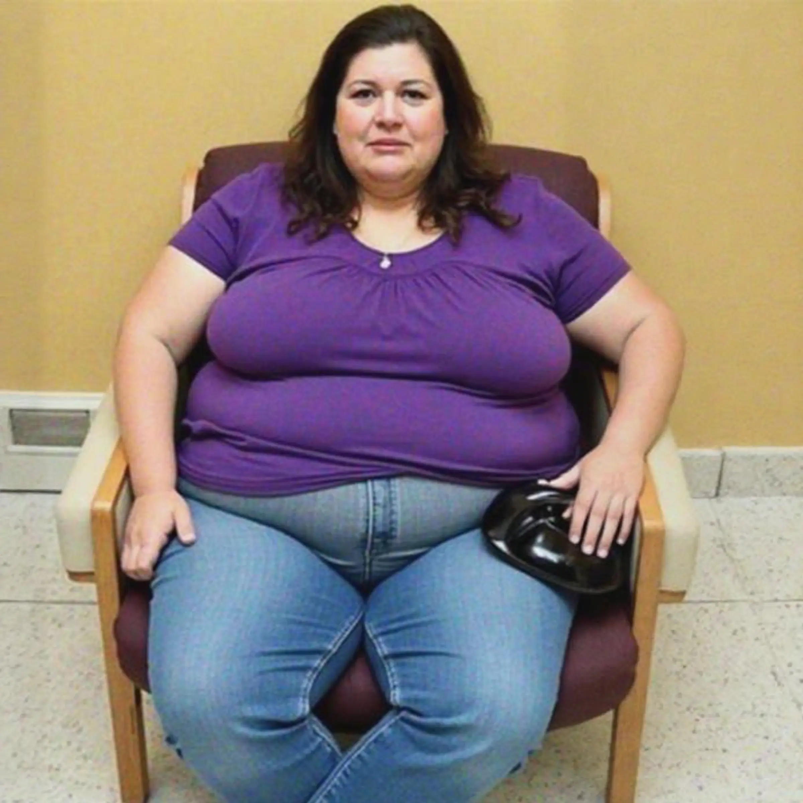
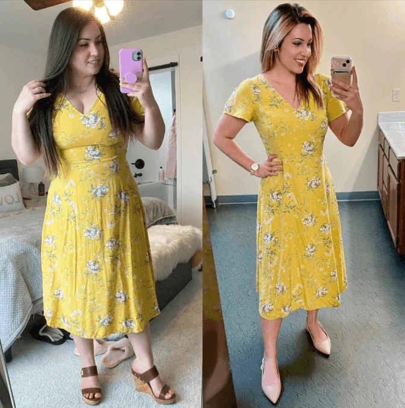
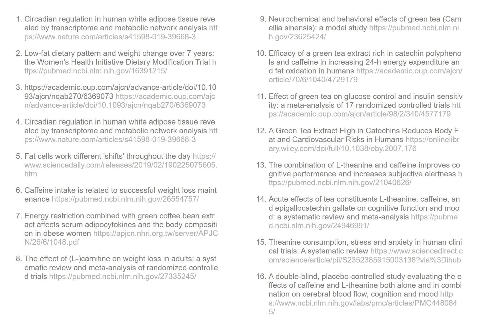

This "7-Second Ice Water Hack" Melted 58!
How I went from 183 to 125 and Regained my Confidence.

Before I found the 7-Second Ice Water Hack
I Thought Struggling with My Weight Was Just Part of Getting Older... Until My sister Shared This Simple Ice Water Hack
For years, I assumed gaining weight was just part of aging.
I tried walking more. Eating less. Even those so-called "miracle diets" that promised the world.
But no matter what I did, my belly, my arms, and my thighs just wouldn't budge.
I was stuck in a cycle of losing the same 5 pounds over and over again and gaining it right back.
Then, one morning my sister, who has been living outside the country, called me. I could hear the excitement in her voice:
"Sister, I found something you NEED to try."
She told me about a 7-second morning ice water hack that forces the body into all-day fat-burning mode—without exercise or dieting.
I almost didn't believe her... until I saw her transformation pictures.
I've always thought my sister is beautiful, but she looked so much younger, slimmer, and energetic.
My sister's Transformation After Dropping -47 Inspired Me

The Secret Behind her Transformation
🧪 The Secret? It all comes down to a newly discovered metabolic loophole that top scientists uncovered about fat burning.
💡 New research from Harvard, Stanford, and top weight-loss experts reveals that most people's metabolisms shut off completely each morning—making it nearly impossible to burn fat.
But this simple 7-second ice water hack flips the switch back on, turning the body into a 24/7 fat-burning machine.
Thankfully, I decided to give it a try...
What Happened Next Changed My Life...
From the moment I started, I could tell something was different.
In the first week, I lost 2 inches off my waist.
By week three, my clothes started feeling loose.
Now, just a few months later, I've shed the 58 stubborn pounds I've been trying to lose for decades!
For the first time in years, I feel like me again.
My energy is through the roof. I can keep up with my grandkids and enjoy outdoor activities again.
No more cravings or mid-afternoon slumps.
I'm eating all my favorite foods—pasta, bread, and even desserts—without gaining a single pound.
My blood sugar and cholesterol levels are back to normal.
I wish I had learned about this sooner.
But I'm so glad I made the decision to listen to my sister and try it.
The New Me! Looking and Feeling Confident.
Don't Wait... Try it for Yourself!
The "7-Second Ice Water Hack" isn't just about losing weight—it's about having the energy to enjoy life, feeling confident again, and loving the way you look.
Click the link below to learn about the simple 7-second hack that changed my life.
But hurry—I've heard the site might not be up for much longer.
Take a few moments to check it out now. You deserve this. 👇 👇


Disclaimer: All information provided is for educational use only. Always consult with your doctor or primary care physician prior to starting any new health product or fitness routine.
This site is not a part of the Facebook website or Facebook Inc.
Additionally, this site is NOT endorsed by Facebook in any way.
FACEBOOK is a trademark of FACEBOOK, Inc.